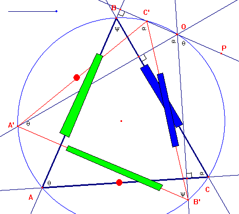
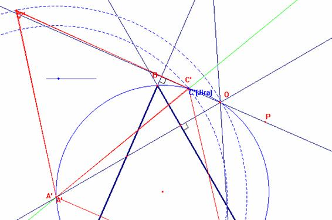
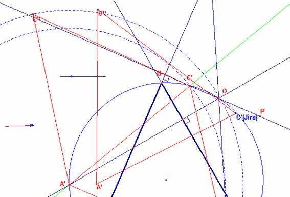
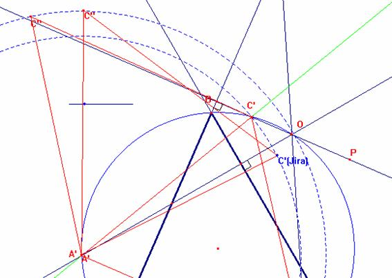
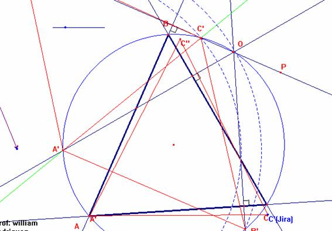
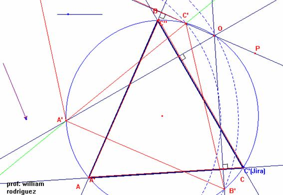

Para el aula
Problema 276
Circunferencias y tangencia
25. O es un punto sobre la circunferencia circunscrita al triángulo ABC. Demostrar que si las perpendiculares desde O a los lados AB, AC y BC cortan a la circunferencia en los puntos c, b y a, el triángulo abc es igual en todos los aspectos al ABC. [Nota del director: tienen los mismos lados y ángulos, aunque el orden es diferente]
a) Estudiar a qué transformaciones se somete ABC para transformarse en el abc, de manera que se solapen exactamente [añadido por el director].
Aref, M.N., Wernick,W. (1968): Problems &Solutions in Euclidean Geometry. Dover Publications, Inc, New York. (pag. 97)
Solución del profesor William Rodríguez Chamache (Proyecto geometría interactiva)
:
Del gráfico
Por lo tanto
Luego por lo tanto BC=B’C’ (arcos iguales determinan cuerdas iguales)
Por lo tanto AB=A’B’
Y y AC=A’C’
Finalmente los triángulos ABC yA’B’C’ con congruentes.

Para que los triángulos solapen:





* Trazamos la recta que pase por los punto A’ y C’ (L)
Luego aplicamos simetría axial del triángulo A’B’C’ respecto de la recta que pasa por los punto A’ y C’ luego obtenemos el triángulo A’C’B’’( este triángulo puede solapar con el triángulo ABC
Para lograr esto llevamos el punto A’(A’C’B’’) hasta el punto A luego rotamos el triángulo A’C’B’’ hasta que solapen
Applet created on 17/10/05 by william with CabriJava